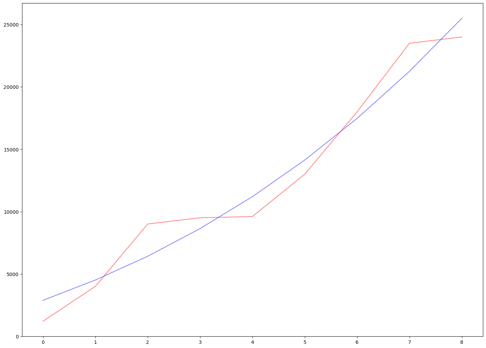

Motion and Velocity |
|
In Feyman's Lectures on Physics Volume I, Chapter 8, he introduces how to represent and estimate velocity, which is used to model the motion of objects. The Chapter starts with two groups of observations, the measure of distances with regard to the time variable. When I was reading this chapter, some thoughts linked to the machine learning methods that drived me to write this blog post. |

|
|
There are two groups of data, where \(8-1\) represents a complex system of car motion, and \(8-2\) represents a simpler system of ball falling. And we know that for \(8-2\) the system can be written with an equation \(s = 16t^2\). The question we would like to answer is that representation of the system in \(8-1\), which we can symbolize it as \(s = f(t)\). In order to represent \(f(t)\) accurately we need to include another variable known as speed \(V\), which is the average distance in a short time. From system in \(8-2\) we can represent it as: $$V = \frac{s}{\epsilon} = \frac{(16(t_0 + \epsilon)^2 - 16t_0^2)}{\epsilon} = 32t_0 + 16{\epsilon} \approx 32t_0$$. Then we can approximate the distance s further with integral equation as: $$s = \sum_{t}V * \Delta t = \sum_{t} 32t \Delta t$$, The system can be empirically validated as: |
|
Where the velocity calculated by the equation can be used to estimate the distance correctly. This shows that distance and its derivative can be represented by a form of polynomial. And this process is invertible. Now we would like to understand the system of \(8-1\), we can write the equation as: \(s=At^3+Bt+C\), the same form of polynomials like in \(8-2\). Then we can infer the coefficients with the data in \(8-1\). |
|  |
|
The observations of 10 data points can be used to approximate the coefficients of the polynomial with Newtonian methods, as shown in the above Figure. I did not go deeper in this direction for the specific form of the representations. Instead, I built a one-layer neural network to fit the data points. As mentioned by Feyman at the start of his book, unlike Euclidean geometry that first give the general principles and theorems and then corollaries induced from those principles and theorems, Physics can only start from an approximation of those principles because of the very complexity of the universe. Then by understanding some mechanics of the universe it is possible to approximate further to the ground truth. Neural network model is such a tool, and it is worthy to try in this motion dynamic system. |
|
The neural network model has shown better capability for the non-linearity in the data. However, when infering the distance with the derived velocity function, there are still large gaps. |
|
Hence, I return to the previous method, to build a polynomial function for the velocity and approximate the distance. The results are shown in the below figure, where the velocity function learned is \(V=43.44∗t^2+1754.45\). This is quite similar to the ground truth velocity in the data. Please note that in all the experiments, the first data point has been hold-out to validate the reliability of the model. |